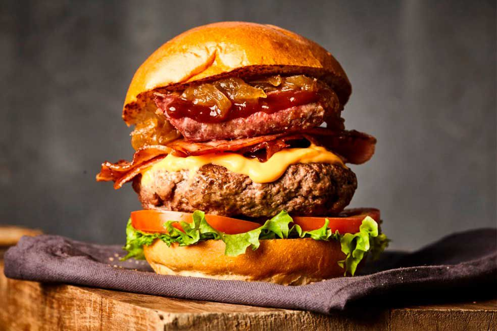

Burger

Deliciosa hamgurguesa de carne y tocino preparada con deliciosas
verduras frescas
ingredintes:
- carne
- pan
- verduras (cebolla, lechuga, tomate
- queso
pasos:
- Debemos cocinar la carne con las especias
- el pan le ponemos mantequilla
- En medio de los panes pones la carne acompañada de las
verduras y un pedazo de queso